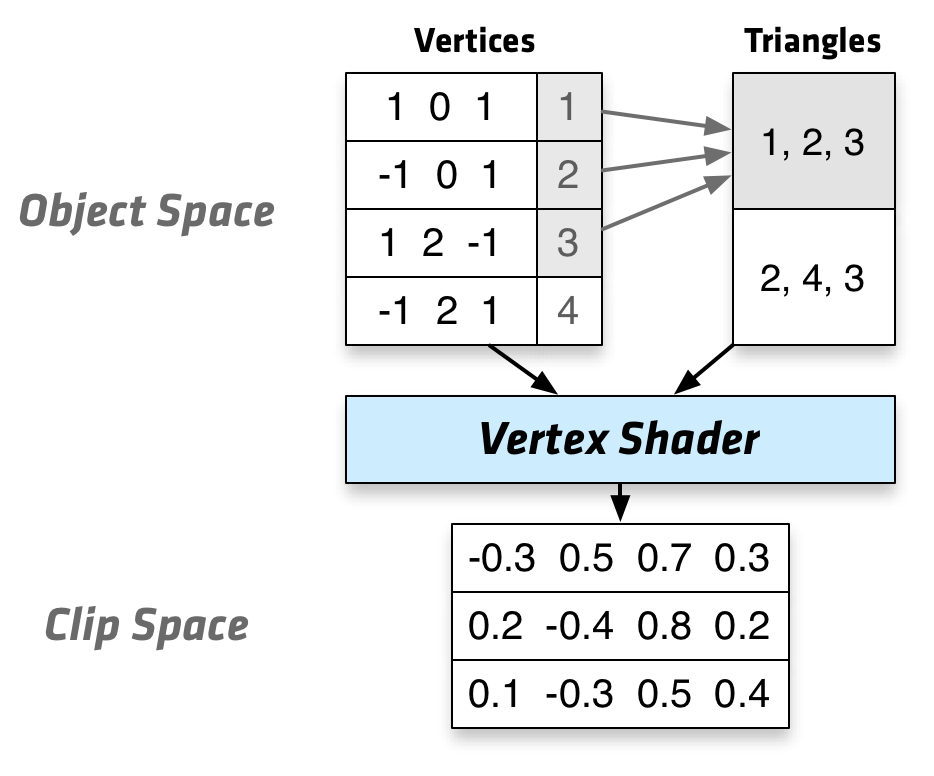
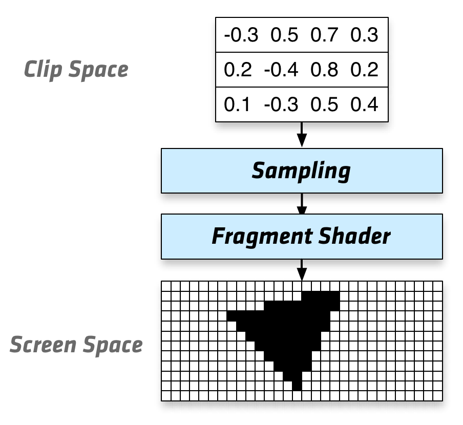

Intro to WebGLwith Three.js
What is 3D?
Rendering
Bresenham Lines
Scanline Rendering
Snap To Pixel
"Anti-Aliasing!"
Sub-Pixel Accuracy
Samples
Vector World
Raster World
Sampling
Shaders


Vertex Shader
// Global Variables uniform mat4 projectionMatrix; uniform mat4 viewMatrix; uniform mat4 modelMatrix; // Per Vertex Attributes attribute vec3 position; // Per Vertex Code void main() { gl_Position = projectionMatrix * viewMatrix * modelMatrix * vec4(position, 1.0); }
Fragment Shader
// Global Variables uniform vec3 color; uniform vec3 direction; // Interpolated Per-Vertex Quantities varying vec3 vNormal; // Per Fragment Code void main() { float diffuse = dot(vNormal, direction); gl_FragColor = vec4(diffuse * color, 1.0); }
WebGL
JavaScript API for rendering interactive 2D and 3D graphics
inside an HTML <canvas> element.
Browser Support

WebGL vs OpenGL
- Browser based OpenGL ES 2.0
- HTML5, CSS3
- JavaScript
- Paste and play
- Performance
- Current OpenGL version - 4.5
Thanks!
Cyberdemon © id Software, Three.js port by AlteredQualia